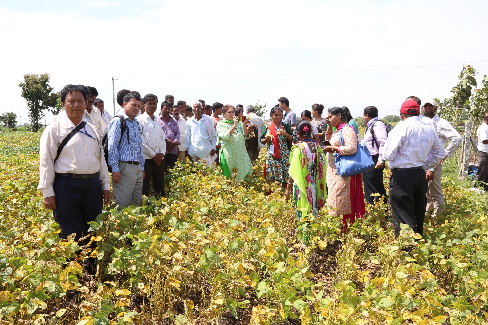

Farm Gallery

FLD Demonstration Plots

Horticulture Orchard

Polyhouse for Vegetables

Farmer Training Sessions

Vegetable Nursery Unit
Agroforestry Plantation
Complete overview of land utilization, infrastructure, and farm activities
Location: Jalgaon Jamod, Buldhana District, Maharashtra
Total Area: 45 acres used for training, demonstrations, seed production, and horticulture development.
FLD Demonstration Plots
Horticulture Orchard
Polyhouse for Vegetables
Farmer Training Sessions
Vegetable Nursery Unit
Agroforestry Plantation